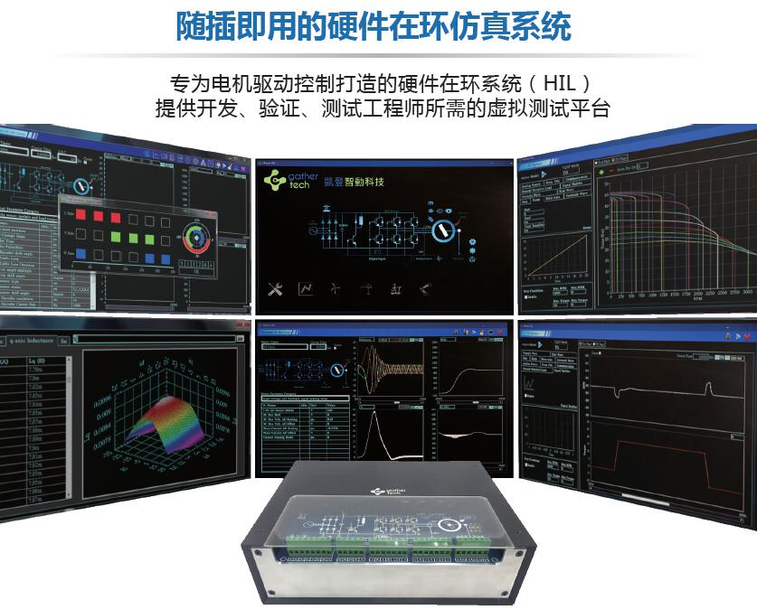
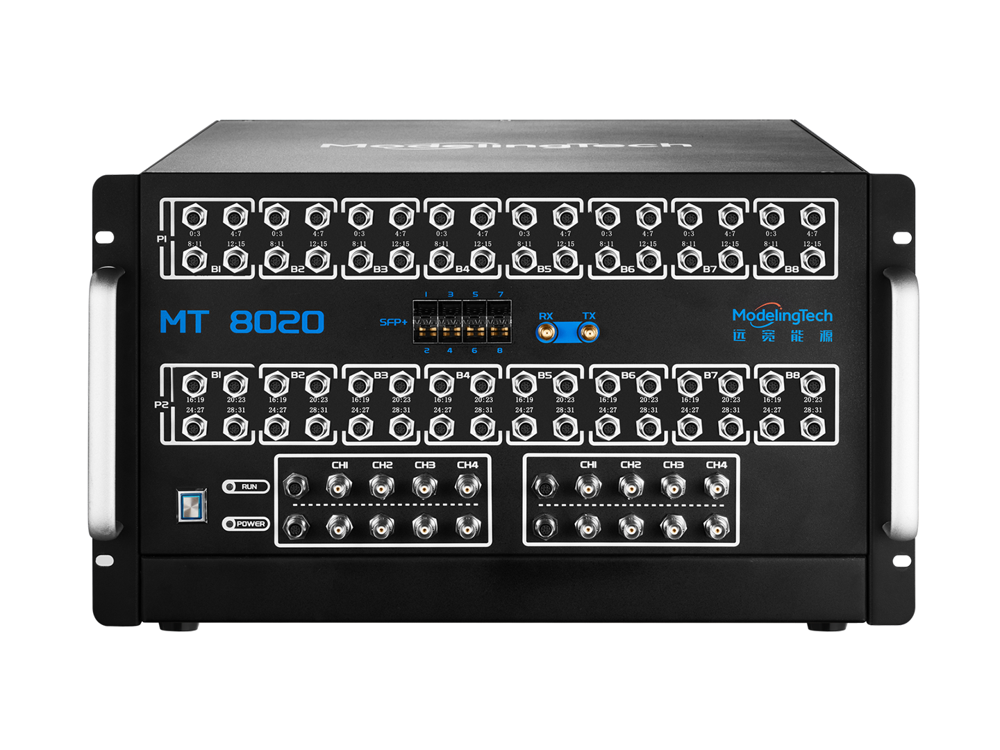
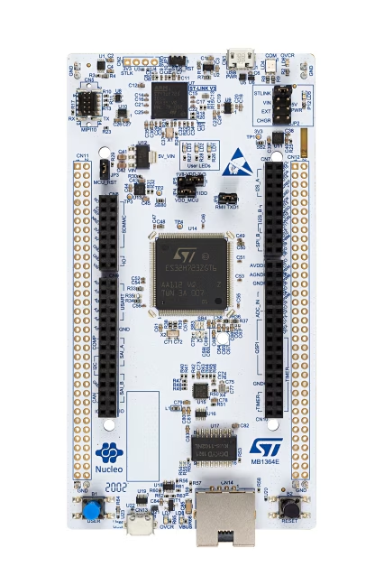
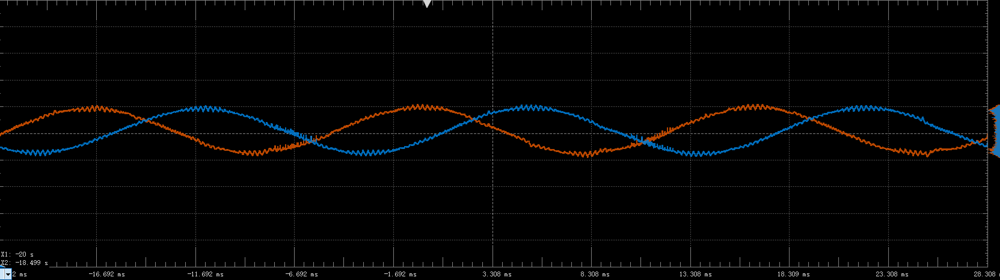
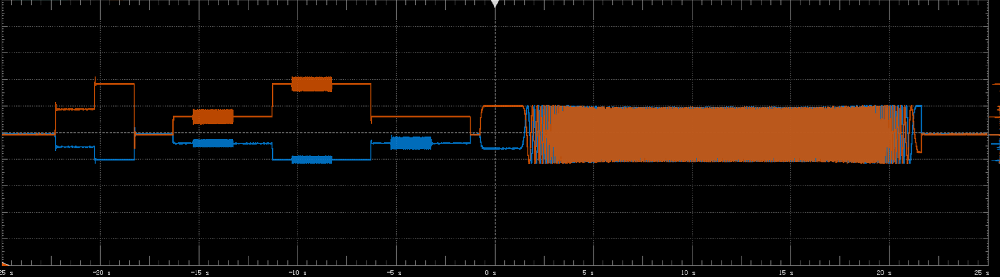

电机驱动器开发过程中，经常会用到硬件在环（Hardware In the Loop， HIL）设备。硬件在环设备可以模拟真实的逆变器以及电机，从而使驱动器控制软件开发和逆变器的开发独立开来，从而提高开发效率以及测试安全性。常见的硬件在环设备有MR2（凯登智动）、MT8020（远宽能源）等。


HIL设备通常价格昂贵，一台通常需要数十万人民币，因此很难做到每个工程师配备一台，如果能够开发低成本的HIL方案，实现工程师人手一台，可以大大提高工作效率。
HIL设备通常使用高性能FPGA实现高速运算，从而保证仿真精度，如果能够使用价格较低的MCU代替，其整体成本就可以大大降低。意法半导体的STM32H723芯片，凭借较低的价格和优异的性能，在工控领域应用广泛。笔者就利用H723开发板制作了一套简易HIL设备，可以实现电机开环控制（无传感器矢量控制）算法的调试。

HIL设备要想支持调试电机开环控制，除了自身需要具有高精度逆变器以及电机数学模型外，采样PWM信号并输出相电流和母线电压信号，是整个系统开发的关键点。相电流和母线电压可以通过芯片的DAC输出，或者通过PWM信号经过低通滤波进行输出，PWM信号的采样，可以通过DI采样（精度差）或者定时器捕获，可以参考专利《脉宽调制信号占空比采样方法、装置、设备及存储介质》（CN202311360454.5）。下图为本HIL设备输出的电流信号，可以看出，模拟输出的电流信号中包含了开关纹波，与实际的电流信号非常相似。

如果驱动器的MCU有富余算力，那么就可以利用MCU富余的算力来计算逆变器和电机模型，从而实现在MCU内部模拟HIL设备。这种方式的好处是，不需要额外的硬件成本，只需要在驱动器内部增加一套逆变器和电机模型即可。缺点是无法验证采样和PWM相关外设以及软件，在驱动器底层软件开发完成后，这个缺点就完全可以忽略。当然，如果MCU算力不足，这个方案就无法实现。
将软件中原本发送给PWM模块的占空比发送给逆变器模型，同时从逆变器和电机模型中获取母线电压、相电流等信号，就可以实现在驱动器内部实现软件仿真。下图为使用模拟设备仿真时的波形，使用模拟HIL仿真时，由于输入给逆变器模型的是占空比，电流信号中不再包含开关纹波。
